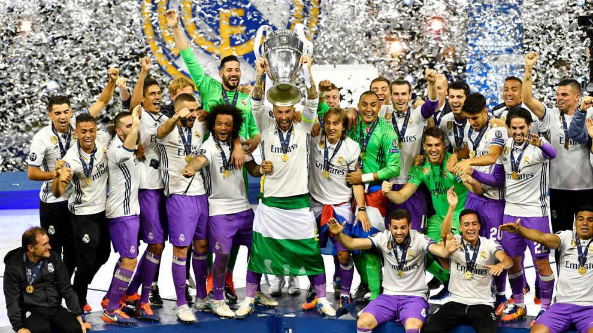

La Juve no logro vencer a un Madrid plagado de estrellas

Dijo Sergio Ramos en la rueda de prensa previa a la gran final que eran conscientes de que podian entrar en la historia. Y el equipo lo ha logrado, pero no parece ni mucho menos que ese aviso del capitan suene a una meta, a una especie de final tras el deber cumplido. Nada de eso, los jugadores saltaron al cesped nada mas escuchar el pitido del colegiado, pero esa fiesta no parece mas que un comienzo, o al menos un punto seguido.